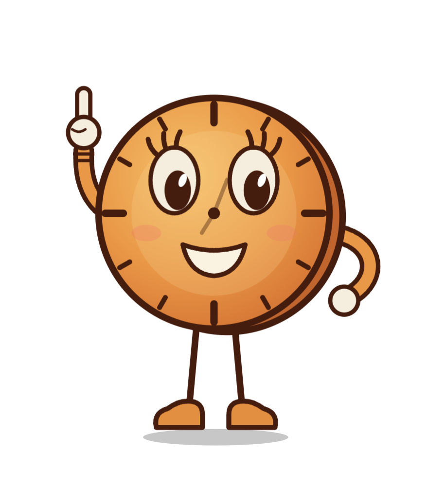
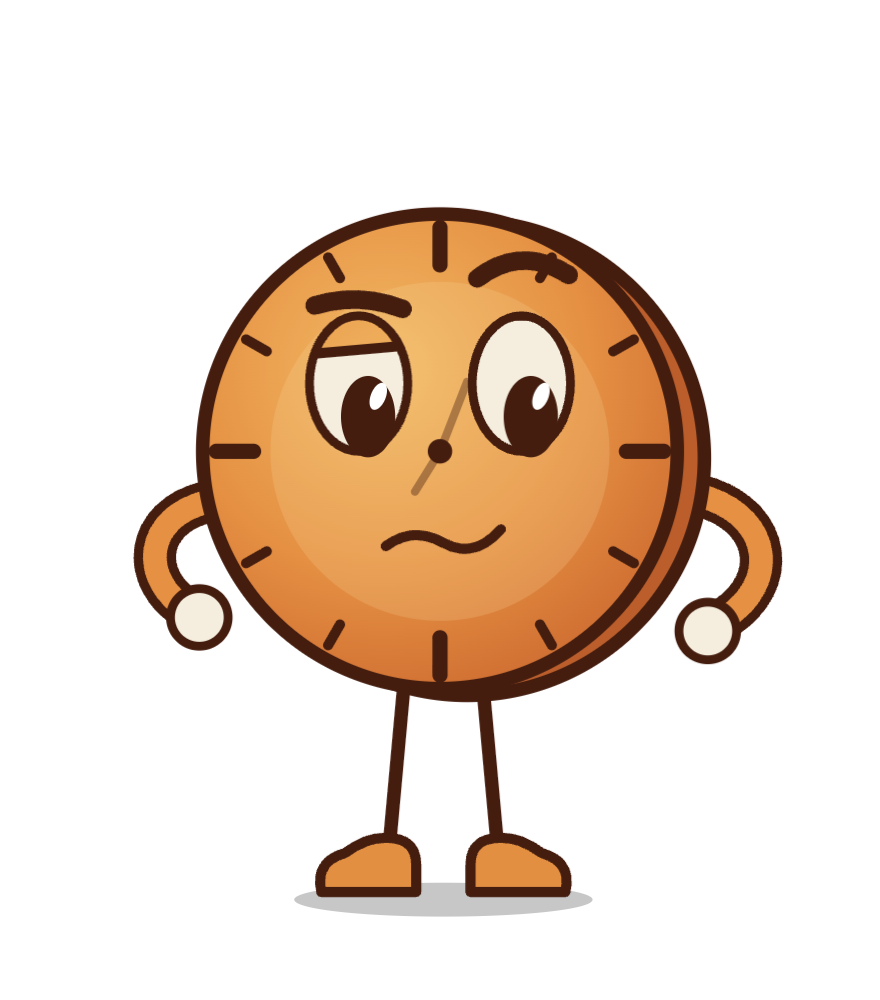
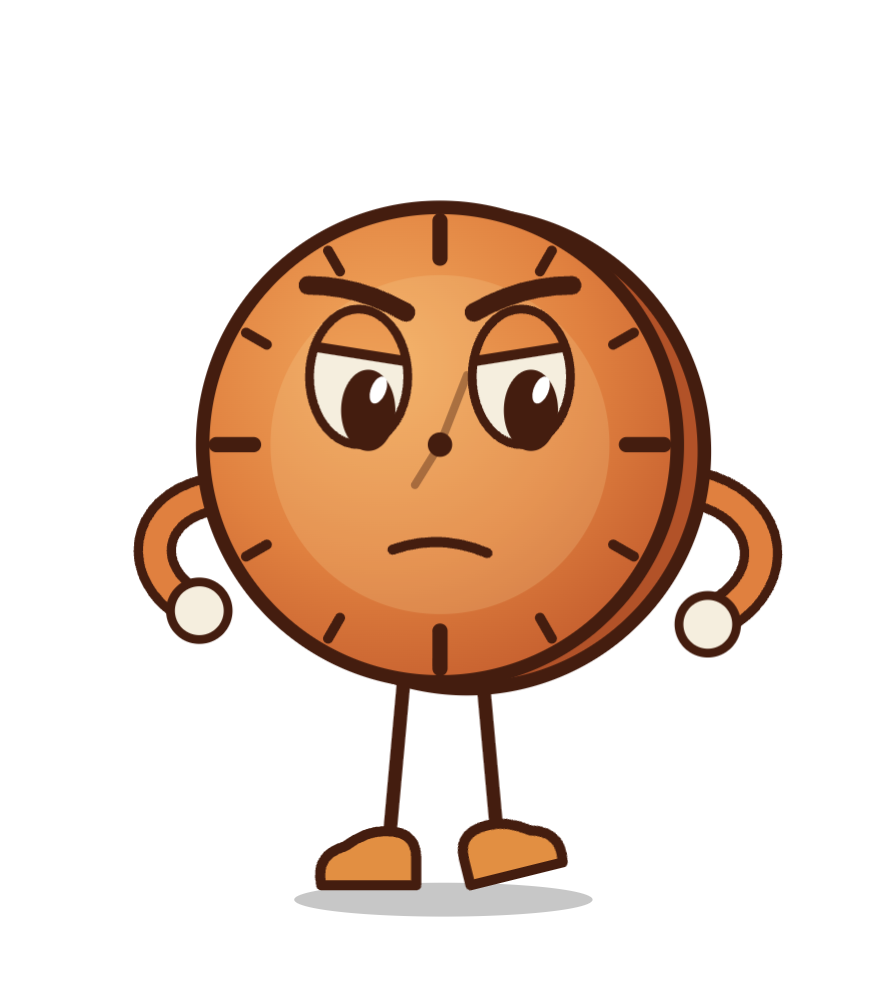
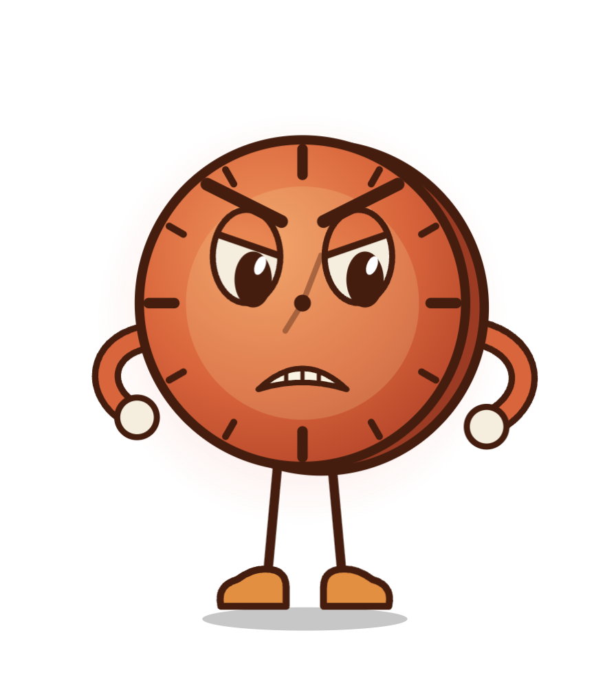
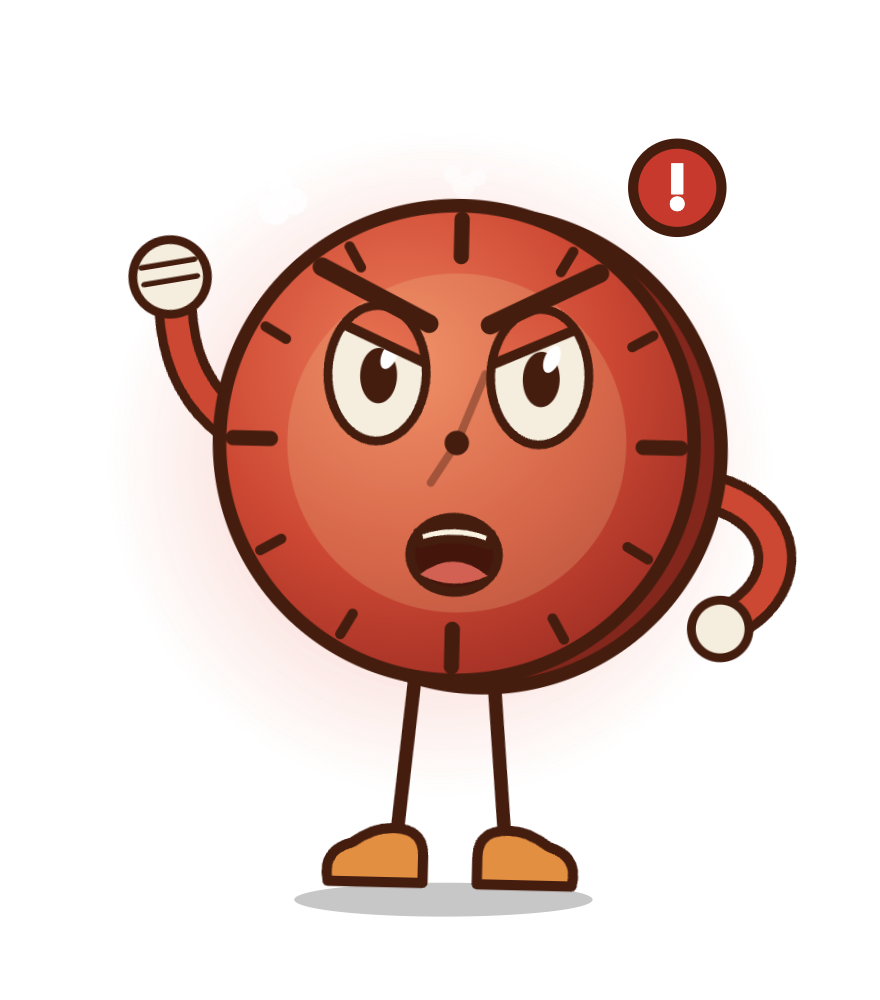

Ms. Minutes · Mood Chart
Her mood follows how much of your most urgent task's time has passed.

Happy0–50% · NOMINAL

Skeptical50–75% · DIVERGING

Annoyed75–90% · UNSTABLE

Angry90–100% · CRITICAL

FuriousOverdue · NEXUS EVENT
ProudAll done · PRISTINE